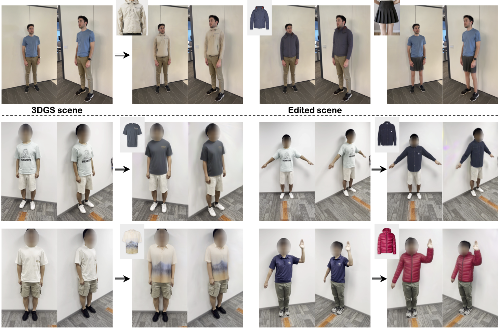

|  |
Given a garment image and multi-view human datasets, GS-VTON effectively achieves fine-grained virtual try-on that maintains the original identity while reflecting the characteristic of the target garment.
Diffusion-based 2D virtual try-on (VTON) techniques have recently demonstrated strong performance, while the development of 3D VTON has largely lagged behind. Despite recent advances in text-guided 3D scene editing, integrating 2D VTON into these pipelines to achieve vivid 3D VTON remains challenging. The reasons are twofold. First, text prompts cannot provide sufficient details in describing clothing. Second, 2D VTON results generated from different viewpoints of the same 3D scene lack coherence and spatial relationships, hence frequently leading to appearance inconsistencies and geometric distortions. To resolve these problems, we introduce an image-prompted 3D VTON method (dubbed GS-VTON) which, by leveraging 3D Gaussian Splatting (3DGS) as the 3D representation, enables the transfer of pre-trained knowledge from 2D VTON models to 3D while improving cross-view consistency. (1) Specifically, we propose a personalized diffusion model that utilizes low-rank adaptation (LoRA) fine-tuning to incorporate personalized information into pre-trained 2D VTON models. To achieve effective LoRA training, we introduce a reference-driven image editing approach that enables the simultaneous editing of multi-view images while ensuring consistency. (2) Furthermore, we propose a persona-aware 3DGS editing framework to facilitate effective editing while maintaining consistent cross-view appearance and high-quality 3D geometry. (3) Additionally, we have established a new 3D VTON benchmark, 3D-VTONBench, which facilitates comprehensive qualitative and quantitative 3D VTON evaluations. Through extensive experiments and comparative analyses with existing methods, the proposed GS-VTON has demonstrated superior fidelity and advanced editing capabilities, affirming its effectiveness for 3D VTON.
We enable 3D virtual try-on by leveraging knowledge from pre-trained 2D diffusion models and extending it into 3D space. (1) We introduce a reference-driven image editing method that facilitates consistent multi-view edits. (2) We utilize low-rank adaptation (LoRA) to develop a personalized inpainting diffusion model based on previously edited images. (3) The core of our network is the persona-aware 3DGS editing which, by leveraging the personalized diffusion model, respects two predicted attention features-one for editing and the other for ensuring coherence across different viewpoints-allowing for multi-view consistent 3D virtual try-on.
@article{cao2024gsvton,
title={GS-VTON: Controllable 3D Virtual Try-on with Gaussian Splatting},
author={Yukang Cao and Masoud Hadi and Liang Pan and Ziwei Liu},
journal={arXiv preprint arXiv:2410.05259},
year={2024}
}